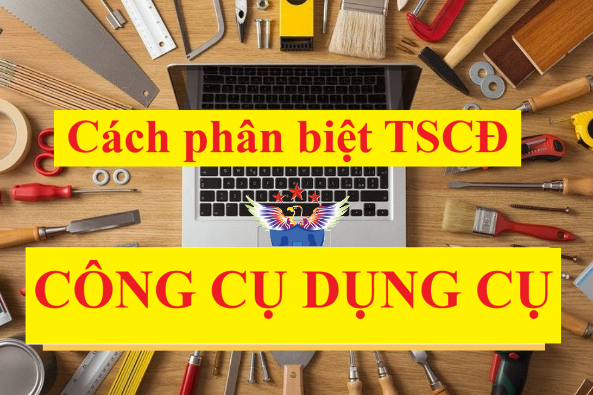

Hướng dẫn cách nhận biết Tài sản cố định với Công cụ dụng cụ, cách phân biệt đâu là TSCĐ đâu là CCDC theo quy định tại Thông tư 99/2025/TT-BTC và Thông tư 45/2013/TT-BTC. Điều kiện ghi nhận là Tài sản cố định trong Doanh nghiệp.
Theo điều 3 Thông tư 45/2013/TT-BTC quy định: Tiêu chuẩn và nhận biết tài sản cố định:
"1. Tư liệu lao động là những tài sản hữu hình có kết cấu độc lập, hoặc là một hệ thống gồm nhiều bộ phận tài sản riêng lẻ liên kết với nhau để cùng thực hiện một hay một số chức năng nhất định mà nếu thiếu bất kỳ một bộ phận nào thì cả hệ thống không thể hoạt động được, nếu thoả mãn đồng thời cả ba tiêu chuẩn dưới đây thì được coi là tài sản cố định:
a) Chắc chắn thu được lợi ích kinh tế trong tương lai từ việc sử dụng tài sản đó;
b) Có thời gian sử dụng trên 1 năm trở lên;
c) Nguyên giá tài sản phải được xác định một cách tin cậy và có giá trị từ 30.000.000 đồng (Ba mươi triệu đồng) trở lên."
Xem thêm: Tiêu chuẩn ghi nhận Tài sản cố định
|
Theo Nguyên tắc kế toán - Tài khoản 153 Công cụ, dụng cụ tại Thông tư 99/2025/TT-BTC và Điều 25 của Thông tư 133/2016/TT-BTC quy định:
Công cụ, dụng cụ là những tư liệu lao động không có đủ tiêu chuẩn quy định về giá trị và thời gian sử dụng đối với TSCĐ. Vì vậy công cụ, dụng cụ được quản lý và hạch toán như nguyên liệu, vật liệu. Theo quy định hiện hành, những tư liệu lao động sau đây nếu không đủ tiêu chuẩn ghi nhận TSCĐ thì được ghi nhận là công cụ, dụng cụ:
- Các đà giáo, ván khuôn, công cụ, dụng cụ gá lắp chuyên dùng cho sản xuất xây lắp;
- Các loại thiết bị, phụ tùng thay thế; các loại bao bì bán kèm theo hàng hóa có tính tiền riêng, nhưng trong quá trình bảo quản hàng hóa vận chuyển trên đường và dự trữ trong kho có tính khấu hao để trừ dần vào giá trị của bao bì;
- Những dụng cụ, đồ nghề bằng thủy tinh, sành, sứ;
- Phương tiện quản lý, đồ dùng văn phòng;
- Quần áo, giày dép chuyên dùng để làm việc;...
|
Theo điều 9 Thông tư 45/2013/TT-BTC quy định:
“11. Đối với các tài sản cố định doanh nghiệp đang theo dõi, quản lý và trích khấu hao theo Thông tư số 203/2009/TT-BTC nay không đủ tiêu chuẩn về nguyên giá tài sản cố định theo quy định tại Điều 3 của Thông tư này thì giá trị còn lại của các tài sản này được phân bổ vào chi phí sản xuất kinh doanh của doanh nghiệp, thời gian phân bổ không quá 3 năm kể từ ngày có hiệu lực thi hành của Thông tư này”.
Như vậy: Những Tài sản khi DN mua về mà không đủ tiêu chuẩn và nguyên giá Tải sản cố định thì sẽ là Công cụ dụng cụ và sẽ được phân bổ vào chi phí không quá 3 năm.
Só sánh Tài sản cố định và Công cụ dụng cụ:
Những điểm giống nhau:
- Nguyên giá của TSCD/ CCDC phải được xác định một cách rõ ràng: hồ sơ về TSCD/ CCDC được mua về với nguồn gốc xuất xứ,…
- Tham gia vào quá trình hoạt động kinh doanh của DN và chắc chắn thu được lợi ích kinh tế trong tương lai.
Những điểm khác nhau:
|
TÀI SẢN CỐ ĐỊNH |
CÔNG CỤ DỤNG CỤ |
|
Giá trị ≥ 30 triệu (không bao gồm thuế GTGT) |
Giá trị < 30 triệu (không bao gồm thuế GTGT) |
|
Thời gian sử dụng: 01 năm trở lên |
Thời gian sử dụng: không quy định |
Xem thêm: Cách hạch toán tính phân bổ công cụ dụng cụ
-------------------------------------------------------------
Kế toán Diệu Tâm xin chúc các bạn thành công!
